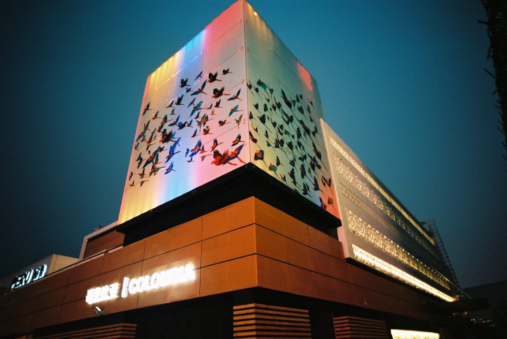

01 / 07
Shanghái · China · 2010
Expo Shanghái 2010
Expo Shanghái 2010
Pabellón Colombia
Estructuración completa y operación del proyecto para la participación de Colombia en la Exposición Universal de Shanghái 2010.